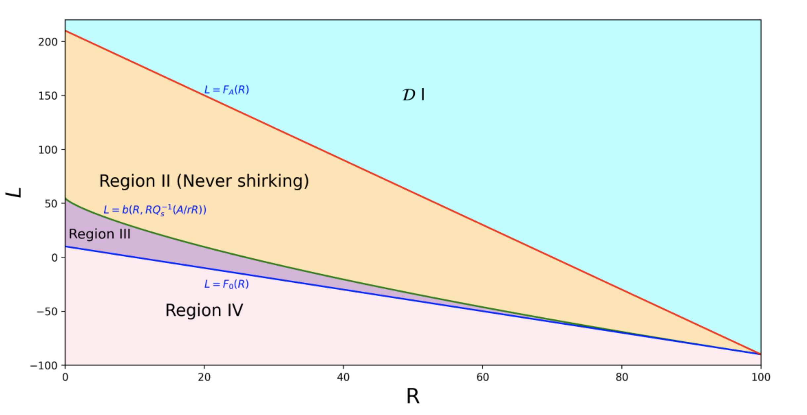

Dynamic Contracting with Random Effort Adjustment
2026 · Working Paper · Theory · Single-authored
Working papers, publications, and the themes that organize my research program — at the intersection of economic theory, quantitative finance, and data science.
Drafts available on request. SSRN/arXiv links forthcoming.
This paper develops a continuous-time principal-agent model in which the agent's impatience rises endogenously with effort. We derive explicit value functions and characterize optimal contracts. A central finding is that the payment threshold is non-monotonic in the agent's impatience level: when asset risk is low, the principal initially backloads payments to stretch incentives, but beyond a critical impatience level, the contract shifts toward frontloading, driven by two forces: stronger discounting of future payment and the rising cost of sustaining incentive under greater impatience. Implementing the contract with debt, credit lines, and inside equity yields closed-form valuations, showing that equity value shifts from concave to convex as asset risk increases. Temporary suspension efficiently realigns incentives without termination. Finally, we provide explicit conditions for renegotiation-proof contracts, revealing how effort-induced impatience reshapes incentive structures.

When the principal can design both the monitoring technology and the information disclosed to the agent, optimal contracts combine a state-dependent monitoring schedule with a strategically obfuscated signal. Bridges dynamic contracting and Bayesian persuasion: the optimal disclosure rule reduces required incentives by shaping the agent's beliefs about future enforcement.